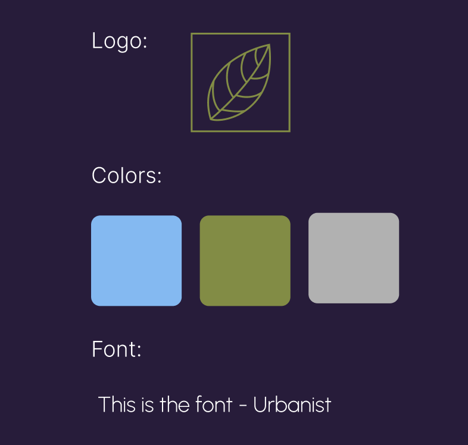
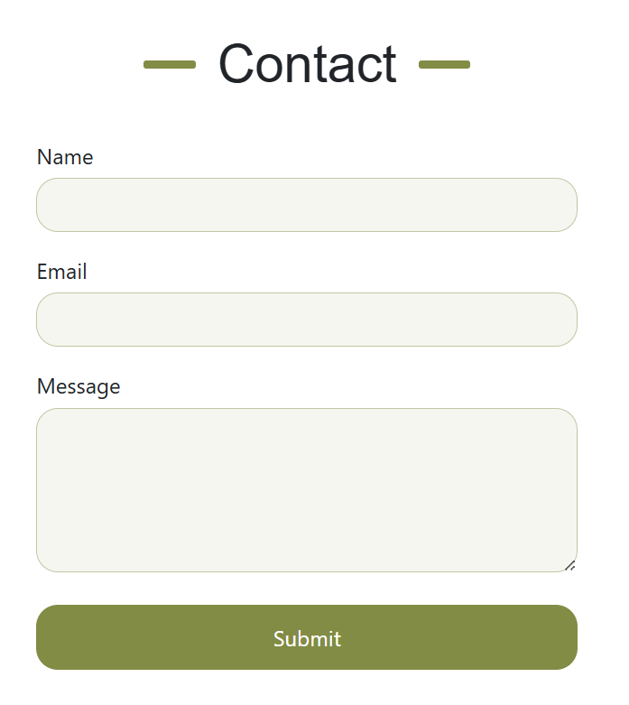

This website was a side project I designed in order to work on my skills. I created fake company, GreenGrid,
focused on
clean and renewable energy. I wanted to design a webiste for a company and be able to walk through the
entire process. I chose
to create a compnay I thought would be neat to have as a client, and one that would work with the theme I
had in mind.
For this website I did more user research to understand what the target audience would be. Because I was
approaching
this as I would a client project, I needed it to reflect the company's mission and be
modern in its
design. I found that my users
would be interested in the environment, a minimalistic design would get to the point,
and that it needed
to be appealing to adults. All this
led me to having a single page website with no animations, few colors, and images that
drew in the
audience.
When I had the idea for this website I knew I wanted it to have a sleek and modern feel to it. I wanted
there
to be lots of whitespace, a clean layout, elegant font, and images to break up the text. I spent some
time going through
Pinterest and other sites getting inspiration. I chose my intro image and used that to pick the three
colors for my
palette. I knew I wanted an accent color and ended up choosing a light green to be both the logo color
and
accent color on the site.


As a learning experience this project was very beneficial, especially in terms of the design process.
Before this site my wireframes
were almost too basic and I didn't have a clear idea of what I wanted. For this one though I had two
wireframes, one basic and
just a brief layout, and one with all the images, text, and colors. Going through the full process let
me learn how long it could take as well. In terms
of the coding, I got more experience with CSS in terms of making a responsive website. I used media
queries quite often and made sure that the site looked
good on any size screen. I also gained experience in forms, styling them, and incorporating them into my
sites.